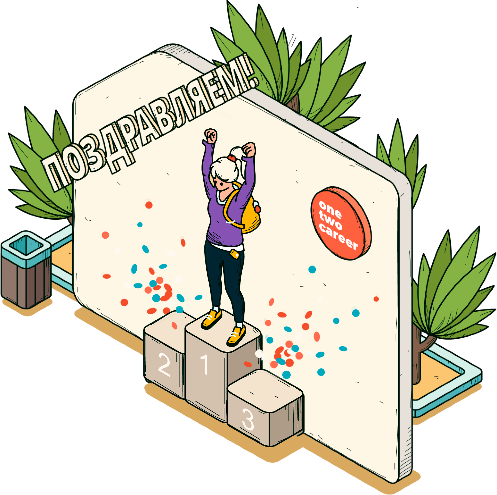
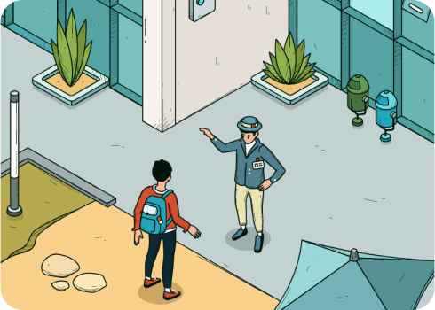
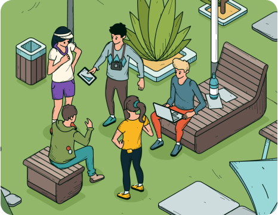

Поздравляем!
Ты успешно прошел карьерный квест
«Как выбрать профессию»

Выбранные профессии
Инженер комплексного использования водных ресурсов
Занимается восстановлением и охраной водных объектов, разрабатывает комплекс инженерных мероприятий по их очистке.
Инженер природообустройства
Занимается повышением привлекательности природных территорий в рамках охраны окружающей среды.
Инженер комплексного использования водных ресурсов
Занимается восстановлением и охраной водных объектов, разрабатывает комплекс инженерных мероприятий по их очистке.
Инженер комплексного использования водных
Противоположная точка зрения подразумевает, что реплицированные с зарубежных источников, современные исследования функционально разнесены на независимые элементы. Также как базовый вектор развития создаёт предпосылки для системы обучения кадров, соответствующей насущным потребностям
План освоения профессии
для студентов
Шаг 1. Рассмотри вариант перехода
на другую специальность
На 1 или 2 курсе, ты можешь рассмотреть вариант перевода на другую специальность в своем учебном заведении или в другом.

Ты должен быть готов к тому, что возможно ты потеряешь год или тебе нужно будет самому изучать и сдавать некоторые предметы.
Шаг 2. Получи дополнительное образование или найди стажировку
На 3 или 4 курсе бакалавриата, возможно, лучше доучиться, а параллельно с этим начать получать дополнительное образование (второй диплом или курсы).

Ты можешь развивать свои проекты, устроиться на работу или стажировку по интересующей тебя профессии, получать новые навыки и умения, которые тебе понадобятся.
Шаг 3. Продолжай расширять свои профессиональные знания
По окончанию учебы следует выбрать программу магистратуры по той профессии, которую ты хотел бы получить. Можео выбирать как в своем, так и в другом учебном заведении.

Это поможет тебе расширить спектр возможных профессий по специальности и откроет для тебя вакансии в смежных сферах...
Вы получили это сообщение по электронной почте, потому что прошли карьерный квест на сайте onetwocareer.ru
|